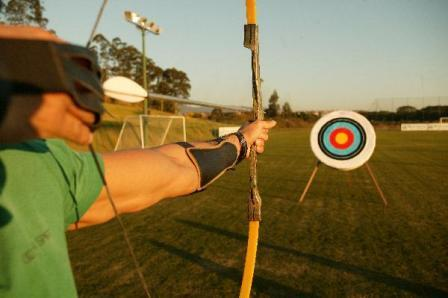

Ola! sou brasileiro,mineiro, e morador da longínqua cidade de Teófilo Otoni, recentemente começou a estudar desenvolvimento de software na dignissima empresa Trybe.
Habilidades Especiais:

Primeiramente, se manter casado é sim uma habilidade, e independente das circunstâncias, se você acha uma PowerRanger, você casa com ela!
Apos um periodo parado no tempo, me juntei com o sábio Benjamin Thomaz (que curiosamente é meu pai),e começamos a desbravar o mundo da terraplanagem.
Formação em pedagogia foi interessante, longa, e gratificante, como deve ser!
Patricar arquearia é uma atividade constante em minha vida.